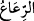
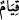
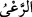
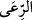
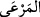
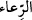
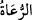
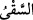
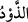
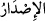

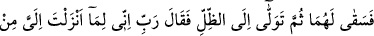
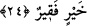
ümmeti arasında, başka bir ferdden ayrı olarak nikâhının inkâr edilmesinden mâsûmdur,
korunmuştur.
Kızlar,“şöyle cevap verdiler: Çobanlar sulayıp çekilmeden biz” öne çıkmayız,
“(onların içine sokulup hayvanlarımızı) sulamayız;”
“
”; “ ” kelimesinin çoğuludur. Tıpkı “
” kelimesinin “
”’in çoğulu olduğu
gibi. “
”, hayvanı korumak mânâsına gelir. Bu, yaşayabilmesi için ya onun gıdasını
vermek ve otlatmakla olur; yahud da düşmanından onu korumakla olur. “
” otlanılan
şey, demektir. “
” otlama yeri, mer’a mânâsınadır. Kendisi için veya başkası için
bir şeyi idâre edip gözeten herkese “
” denir. Hadiste şöyle buyrulmuştur: “Hepiniz
çobansınız ve güttüğünüz şeyden sorumlusunuz.”[98] Denilmiştir ki: hayvanları otlatan
çobanlara “
” denir. İnsanları idâre eden vâlîlere ise “
” denir.
Yani, bizim âdetimiz; çobanların peşinden hayvanlarımızı salamadığımız, onlarla
karışmaktan çekindiğimiz için; onlar hayvanlarını kanarak sulayıp da kuyunun başından
çekilmedikçe ve geri dönmedikçe biz hayvanlarımızı sulamayız.
“
”, “
” ve “
” fiillerinin mefulleri hazfedilmiştir. Çünkü bu fiiller; Mûsâ
(a.s.)’ın o iki kız adına yaptığı iyiliğin sebepleri olduğu için, âyette bu fiillerin
kendilerini beyanla iktifâ edilmiş (ve böylece bu nokta vurgulanmak istenmiştir).
Mûsâ (a.s.)’ın bu iki kıza acıması; zayıf ve iffetli olmaları sebebiyle hayvanlarının
suya gitmelerine mânî olmaları, çobanların ise bunlara önem vermemelerinden dolayı
idi. Yoksa meselâ, kızların salmadıkları hayvanların koyun, diğerlerinin suladıkları
hayvanların deve olmasından değildi.
“Babamız” Şuayb “da çok yaşlıdır.”
Yaşlı ve ihtiyar olduğu ya da şerefli ve değerli bir kimse olduğu için dışarı çıkamıyor
ve hayvanların otlama ve sulama ihtiyaçları için mecbûri olarak bizi gönderiyor.
Muâsır ilim ehlinden biri: “Burada peygamberin hayvanlarına iltifat edilmemesi ibret
vericidir” derse, gerçekten dikkat çekici bir durumu ifâde etmiş olur. Çünkü çoban,
peygamberin ne olduğunu bilmez; bu, zamanımızdaki köylülerin peygamberin şerîatının
ne olduğunu bilmemelerine benzer. Âdet de öyle devam etmiştir ki, her ümmette îman
ehli küfür ehlinden dâimâ daha az olmuştur.
24. Bunun üzerine Mûsâ, onların yerine (davarlarını) sulayıverdi. Sonra gölgeye
çekildi ve: Rabbim! Doğrusu bana indireceğin her hayra (lütfuna) muhtacım, dedi.